Nome Científico:Spinus cucullatus (Swainson, 1820)
Nomes Populares:Também conhecido como Tarim ou Tarim-da-Venezuela.
Atualmente a espécie está e perigo de extinção.
Classificação Biológica
Dominio: Eukaryota
Reino: Animalia
Filo: Chordata
Classe Aves
Ordem: Passeriformes
Família: Fringilidae
Espécie: S. cucullatos
Nutrição Geral
Tipo de Nutrição: Heterotrófico.
Alimenta-se de frutos (figos), de gomos de flores, de sementes de plantas herbáceas. Também consome insetos pequenos, grãos de cajueiro-bravo (Curatella americana), sementes de dente-de-leão (Taraxacum officinale), botões florais de uma asterácea (wedelia) e frutos de phoradendron.
Morfologia e Coloração
O pintassilgo da Venezuela tem um comprimento de cerca de 10 cm. O macho apresenta o peito, a barriga, o dorso e o uropígio de um vermelho vivo. As asas são pretas com uma banda vermelha, a cauda é vermelha com as extremidades das penas também pretas. A cabeça e o pescoço são pretos, o ventre e as pernas são brancos. A fêmea não tem o capuz preto do macho, e o vermelho, menos vivo, apenas aparece no peito, barra alar e uropígio. A cor predominante é o cinzento acastanhado com as asas e a cauda mais escuras, quase pretas. Os juvenis são todos cinzentos e mudam a plumagem aos 3-4 meses. À medida que vão crescendo as cores vão ficando mais vivas.
Comportamento
Tem como características o bom temperamento e facilidade de adaptação à vida doméstica. Seu canto lembra muito o do Pintassilgo brasileiro. É conhecido e desejado em todo mundo recebendo outros nomes como Cardinalito da Venezuela e Red Siskin.
Ocorrência
O pintassilgo da Venezuela que era comum no início do século XX, tornou-se raro e está presente apenas em bolsas isoladas. Antes aparecia em 15 estados do norte da Venezuela, mas os avistamentos mais recentes restringem-se apenas a sete estados (Falcón, Lara, Trujillo, Miranda, Aragua, Anzoátegui e Sucre). Em Trinidad, onde sempre foi raro, desapareceu. A população de Porto Rico, originada por pássaros que fugiram de gaiolas, tem decrescido. Uma pequena comunidade mantém-se no Norte de Santander (Cúcuta), na Colômbia. Em 2000 foi descoberta um nova população no sudoeste da Guiana (Rupununi), talvez de várias centenas ou poucos milhares, a 950 km da localidade venezuelana mais próxima.
Mapa de Ocorrência
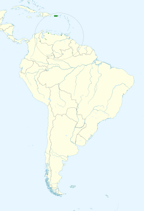
Reprodução
O período de reprodução dura de Abril a Junho, com um segundo período de Novembro a Dezembro. A fêmea constrói o ninho em forma de taça com palhinhas, raizes secas, fibras de coco, pêlos animais, em maciços de Tillandsia em árvores altas. Na Guiana o ninho é construído na folhagem densa no topo de árvores como o cajueiro-bravo (Curatella americana). A postura consiste de 3-4 ovos esbranquiçados. As pequenas crias nascem ao fim de 12-14 dias, são alimentadas pela fêmea e ficam totalmente emplumados aos 12 dias.
 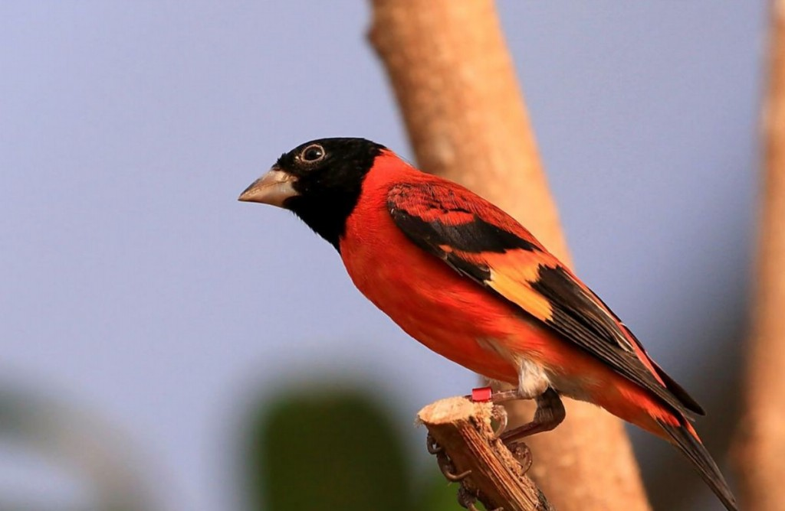
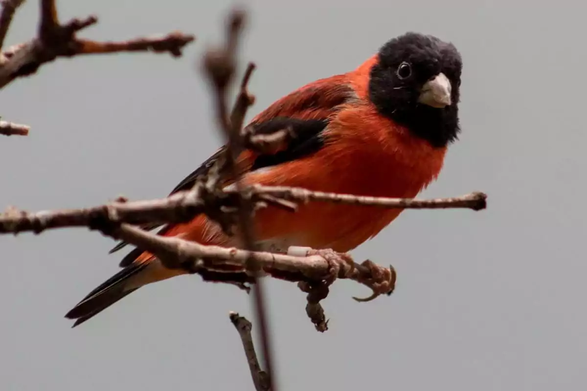
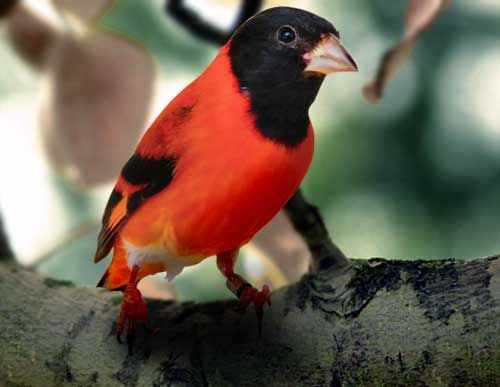
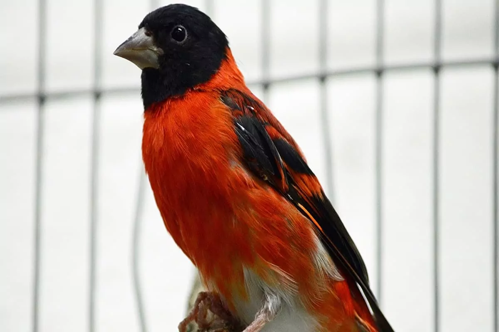
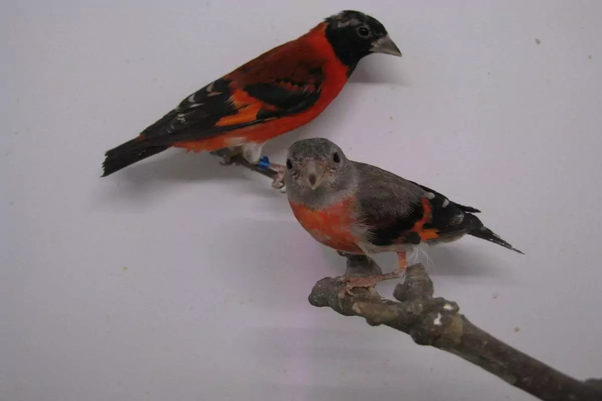
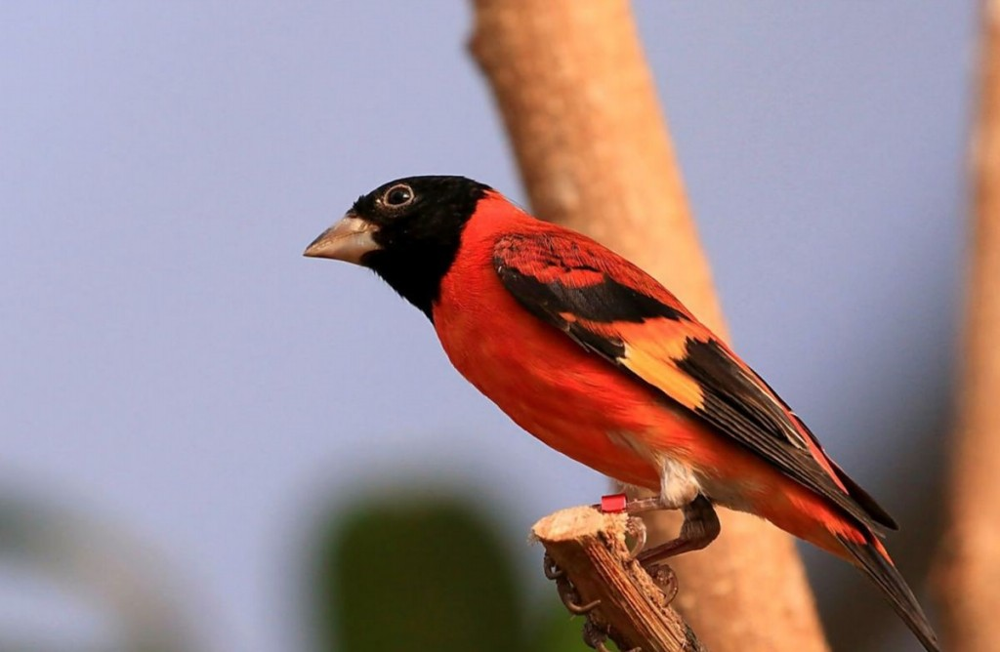
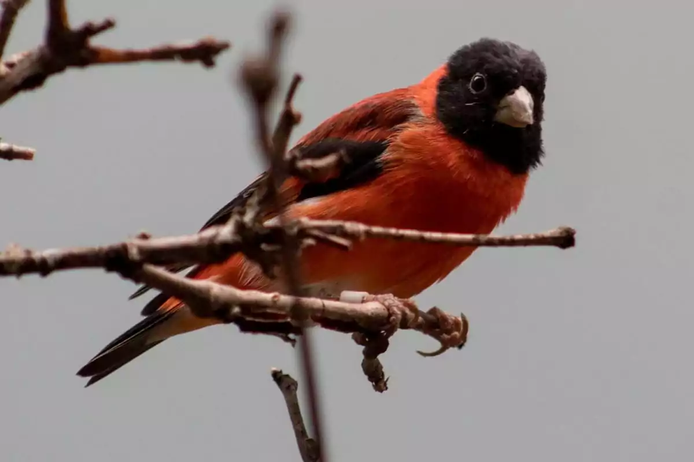
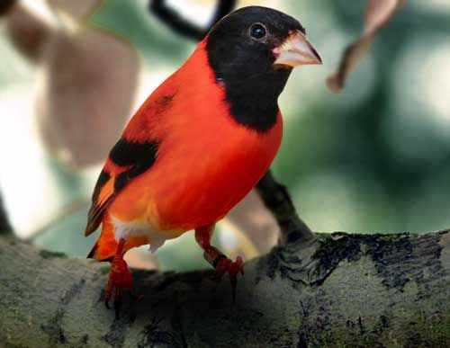
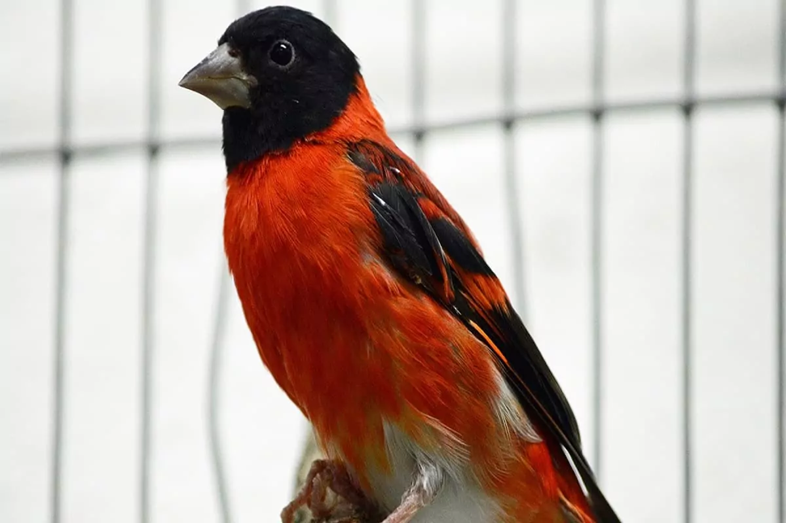
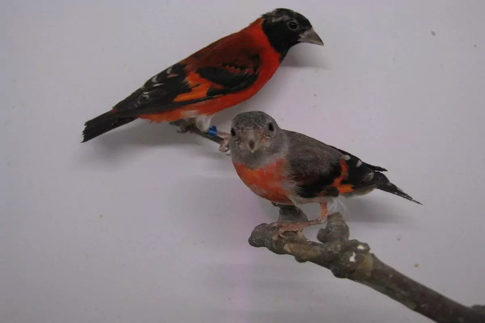